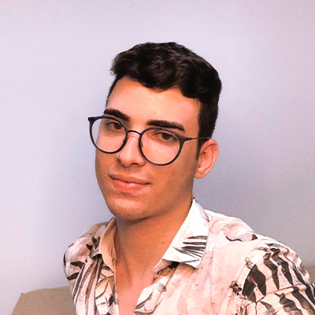

Currículo
Dados Pessoais

Nome:
Jônathas Batista Silva
Data de Nascimento:
07/02/2002
Residência:
Sousa, Brasil
Idiomas:
Português (Nativo)
Inglês (ler bem, entende razoável, escreve bem)
Espanhol (ler bem, entende razoável, escreve bem)
Sobre Mim
Apaixonado pelo desenvolvimento web desde o primeiro contato com a progamação, entrei na TI e vi algo que nunca havia visto em nenhuma outra área, me apaixonei rapidamente pelas oportunidades e pelos diversos caminhos que posso trilhar, entrei no curso de ADS (Análises e Desenvolvimento de Sistemas) e me encontrei nele, pude perceber que estou mais feliz do que nunca em poder fazer algo que gosto. Que a cada dia eu cresça mais, estou lutando para isso.
Entrei no curso em 2020 e nunca havia me dado a oportunidade de conhecer outras áreas, era vestibulando de Medicina e me prendia apenas a isso, decidi conhecer o curso, realizei minha matrícula no IFPB da cidade de Cajazeiras e comecei a estudar remotamente no período da pandemia, devido aos estresses que passei na pandemia e no meu emprego, acabei me atrasando nas disciplinas e isso me desmotivou muito, tranquei o curso em apenas um mês e meio de faculdade, a minha realidade não me permitiu seguir com o curso.
Em 2021 tomei uma decisão, após muito tempo pensando sobre o que iria fazer com a minha carreira acadêmica, retornei no periodo 2021.1 junto com os alunos que haviam entrado no curso pelo SISU, fiz amizades novas, encontrei pessoas com a realidade parecida com a minha, me dei bem em todas as discíplinas e hoje já estou trabalhando para a empresa Júnior da Instituição. Agradeço a mim e ao Universo, por ter me feito aceitar e saber que realmente estou no lugar certo, sempre pertenci e sempre irei pertencer à TI. Avante !!
Educação
2020 - 2023
CTS Análises e Desenvolvimento de Sistemas / IFPB (Instituto Federal de Educação, Ciência e Tecnologia da Paraíba)
Habilidades
COMUNICAÇÃO
Boa comunicação/Interaje muito...
ATENÇÃO
Focado nas atividades designadas/Prestativo
IDIOMAS
Entende bem inglês e espanhol/Fala um pouco de inglês
Experiência de Trabalho
DEZEMBRO 2021
Trainee - Loopis Jr - Cajazeiras
Contato
jonathasx57@gmail.com
(83) 9 8101-1977